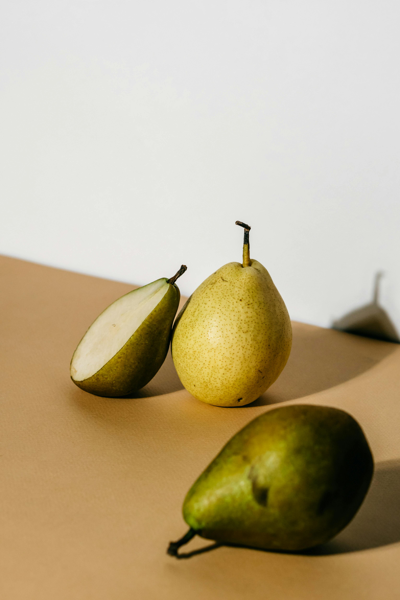
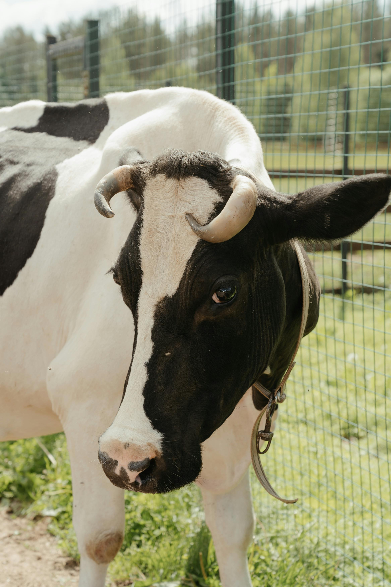

For more information on “Why Vegan?” specific to outdoor gear, see the Gear Guides tab.

Eating plant-based foods improves your energy, heart, and overall wellness.
Recent Research:
Choosing vegan reduces your environmental impact, saving water, forests, and the climate.
Recent Research:

Choosing plant-based helps reduce animal suffering and protects innocent lives.
Recent Research: